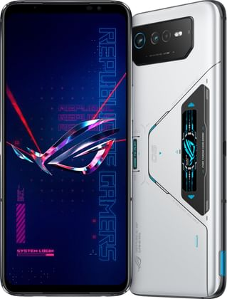
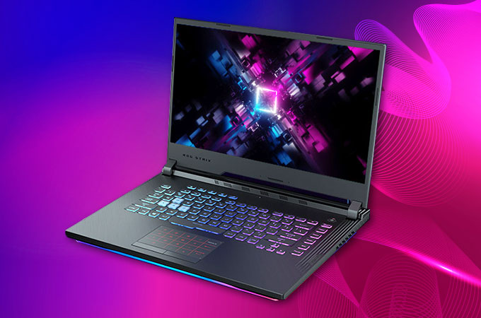

Tech INfo
All Info you can get

Tech INfo
All Info you can get
The techy thingy
Bamboozled:Right It will provide information and specs about every tech product you want,Mobile technology is technology that goes where the user goes. It consists of portable two-way communications devices, computing devices and the networking technology that connects them. Currently, mobile technology is typified by internet-enabled devices like smartphones, tablets and watches. These are the latest in a progression that includes two-way pagers, notebook computers, mobile telephones (flip phones), GPS-navigation devices and more. The communications networks that connect these devices are loosely termed wireless technologies. They enable mobile devices to share voice, data and applications (mobile apps). Mobile technology is pervasive and growing. The number of smartphone users has climbed beyond 3 billion¹ and the global mobile workforce is expected to reach 1.87 billion by 2022. LAPTOPS: Design elements, form factors, and construction can also vary significantly between models depending on the intended use. Examples of specialized models of laptops include rugged notebooks for use in construction or military applications, as well as low-production-cost laptops such as those from the One Laptop per Child (OLPC) organization, which incorporate features like solar charging and semi-flexible components not found on most laptop computers. Portable computers, which later developed into modern laptops, were originally considered to be a small niche market, mostly for specialized field applications, such as in the military, for accountants, or traveling sales representatives. As portable computers evolved into modern laptops, they became widely used for a variety of purposes.[6] Musicware: Headphones are a pair of small loudspeaker drivers worn on or around the head over a user's ears. They are electroacoustic transducers, which convert an electrical signal to a corresponding sound. Headphones let a single user listen to an audio source privately, in contrast to a loudspeaker, which emits sound into the open air for anyone nearby to hear. Headphones are also known as earphones[1] or, colloquially, cans.[2] Circumaural ('around the ear') and supra-aural ('over the ear') headphones use a band over the top of the head to hold the speakers in place. Another type, known as earbuds or earpieces[1] consist of individual units that plug into the user's ear canal. A third type are bone conduction headphones, which typically wrap around the back of the head and rest in front of the ear canal, leaving the ear canal open. In the context of telecommunication, a headset is a combination of headphone and microphone.
Mobile Devices
A mobile device (or handheld computer) is a computer small enough to hold and operate in the hand. Mobile devices typically have a flat LCD or OLED screen, a touchscreen interface, and digital or physical buttons. They may also have a physical keyboard. Many such devices can connect to the Internet and connect with other devices such as car entertainment systems or headsets via Wi-Fi, Bluetooth, cellular networks or near field communication. Integrated cameras, the ability to place and receive voice and video telephone calls, video games, and Global Positioning System (GPS) capabilities are common. Power is typically provided by a lithium-ion battery. Mobile devices may run mobile operating systems that allow third-party applications to be installed and run. Early smartphones were joined in the late 2000s by larger tablets. Input and output are usually via a touch-screen interface. Phones/tablets and personal digital assistants may provide much of the functionality of a laptop/desktop computer in addition to exclusive features.[1] Enterprise digital assistants can provide additional business functionality such as integrated data capture via barcode, RFID and smart card readers. By 2010, mobile devices often contained sensors such as accelerometers, magnetometers and gyroscopes, allowing the detection of orientation and motion. Mobile devices may provide biometric user authentication, such as face recognition or fingerprint recognition. Major global manufacturers of mobile devices are Apple, Samsung, Huawei, Meizu, Zte, Xiaomi, Sony, Google, HTC, LG, TCL, Motorola Mobility, Nokia, Realme and Micromax Informatics. Today in this list, we will tell you about top 5 mobile devices.Today in this list we will tell top 5 mobile in our list.

1. Iphone 14 pro max

The new addition to Apple series this year,having most powerful and fat processor till date by apple. Dynamic Island Always-On display ProMotion technology with adaptive refresh rates up to 120Hz HDR display True Tone Wide colour (P3) Haptic Touch 20,00,000:1 contrast ratio (typical) 1,000 nits max brightness (typical); 1,600 nits peak brightness (HDR); 2,000 nits peak brightness (outdoor) Fingerprint-resistant oleophobic coating Support for display of multiple languages and characters simultaneously Splash, Water and Dust Resistant3 Rated IP68 (maximum depth of 6 metres up to 30 minutes) under IEC standard 60529
2. S23 Ultra by Samsung

The new device added by Samsung in 2023 with most powerful and most responsible and falgship processor qualcomm Snapdragon 8+ gen2 Nano-SIM and eSIM or Dual SIM (2 Nano-SIMs and eSIM, dual stand-by) IP68 dust/water resistant (up to 1.5m for 30 min) Armor aluminum frame with tougher drop and scratch resistance (advertised) Stylus (Bluetooth integration, accelerometer, gyro) having 120 hz of refresh rate which becomes the best and our personal buy in the liststriking symmetrical design returns with one major difference: the use of recycled and eco-conscious materials.1,2 From repurposed glass to the colour of the polished metal frame, beauty is second nature in this form.3 Stay grounded with an array of earth-inspired hues.4 Crafted with natural dyes, each tone is elegant and elevated, yet completely down to earth.3
3. OnePlus 9Rt
A full fleded top notch experience by flagship oneplus 9RT with flagship snapdragon 888 and Height: 16.22 cm Width: 7.46 cm Thickness: 0.829 cm Weight: 198.5gSize: 16.81 cm (measured diagonally from corner to corner) Resolution: 1080*2400 (FHD+), 397 ppi Aspect Ratio: 20:9 Refresh Rate: 120 Hz Type: E4 120 Hz AMOLED Support sRGB, Display P3 Cover Glass: Corning® Gorilla® GlassOperating System: OxygenOS based on Android™ 11 CPU: Qualcomm® Snapdragon™ 888 5G Chipset: X60 GPU: Adreno 660 RAM: 8GB/12GB LPDDR5 Storage: 128GB/256GB UFS 3.1 2-LANE Battery: 4,500 mAh (Dual-cell 2,250 mAh, non-removable) Warp Charge 65T (10V/6.5A) Vibration: Haptic motor Available configurations: 8GB+128GB / 12GB+256GBSensor: Sony IMX766 Sensor Size: 1/1.56" Megapixels: 50 Lens Quantity: 6P Optical Image Stabilization: Yes Electronic Image Stabilization: Yes Focal Length: 2.4cm equivalent Aperture: ƒ/1.8
4. Xiaomi Mi Mix Alpha 2
A phenomenal product by Xiaomi launched in Early 2021Dimensions 154.4 x 72.3 x 10.4 mm (6.08 x 2.85 x 0.41 in) Phone Materials Glass front, ceramic/glass back, titanium alloy (TC4) frame Weight 241 grams Phone Colors blackDisplay Flexible Super AMOLED touch screen, 16M colors Size 7.92 inches Resolution 2088 x 2250 pixels, a pixel density of 388 pixels per inch protection layer Gorilla Glass 5 Screen-to-body ratio 180.8% screen-to-body ratio Other Features 120Hz refresh rate Internal Hardware Chipset Qualcomm Snapdragon 865 - seven nanometers CPU Octa-core (1x2.96 GHz Kryo 485 & 3x2.42 GHz Kryo 485 & 4x1.8 GHz Kryo 485) GPU Adreno 650 Memory Card No RAM 12 GB Internal Storage 512 GB Camera Main Triple 1st Sensor 108 MP (wide), f/1.7 2nd Sensor 12 MP (telephoto), f/2.0, x3، optical zoom 3rd Sensor 20 MP (ultra wide), f/2.2 Features Dual LED flash, panorama, HDR Video Recording 6K@30fps, 4K@30/60fps, 1080p@30/120/240fps, 1080p@960fps Selfie Camera Uses the back camera Features Dual LED flash, panorama, HDR Video Recording 3240p@30fps, 4K@30/60fps, 1080p@30/120/240fps, 1080p@960fps Battery Capacity 4050 mAh non-removable Type Lithium Polymer Fast Charging 40W Sound 3.5mm jack No Loudspeaker Yes Additional Features Sensors Under-display fingerprint sensor - optical Other Features Accelerometer, gyro, proximity, compass, barometer Model Phone Name Xiaomi Mi Mix Alpha
5. Asus Rog 6Pro
A gaming phone by Asus NETWORK Technology GSM / CDMA / HSPA / LTE / 5G LAUNCH Announced 2022, July 05 Status Available. Released 2022, July 13 BODY Dimensions 173 x 77 x 10.3 mm (6.81 x 3.03 x 0.41 in) Weight 239 g (8.43 oz) Build Glass front (Gorilla Glass Victus), glass back (Gorilla Glass 3), aluminum frame SIM Dual SIM (Nano-SIM, dual stand-by) IPX4 water resistant 2" OLED display (on the back) Pressure sensitive zones (Gaming triggers) DISPLAY Type AMOLED, 1B colors, 165Hz, HDR10+, 800 nits (typ), 1200 nits (peak) Size 6.78 inches, 109.5 cm2 (~82.2% screen-to-body ratio) Resolution 1080 x 2448 pixels (~395 ppi density) Protection Corning Gorilla Glass Victus PLATFORM OS Android 12, upgradable to Android 13 Chipset Qualcomm SM8475 Snapdragon 8+ Gen 1 (4 nm) CPU Octa-core (1x3.19 GHz Cortex-X2 & 3x2.75 GHz Cortex-A710 & 4x1.80 GHz Cortex-A510) GPU Adreno 730 MEMORY Card slot No Internal 512GB 18GB RAM UFS 3.1 NTFS support for external storage MAIN CAMERA Triple 50 MP, f/1.9, (wide), 1/1.56", 1.0µm, PDAF 13 MP, f/2.2, (ultrawide) 5 MP, (macro) Features LED flash, HDR, panorama Video 8K@24fps, 4K@30/60/120fps, 1080p@30/60/120/240fps, 720p@480fps; gyro-EIS SELFIE CAMERA Single 12 MP, 28mm (wide) Features Panorama, HDR Video 1080p@30fps SOUND Loudspeaker Yes, with stereo speakers (2 amplifiers) 3.5mm jack Yes 32-bit/384kHz audio COMMS WLAN Wi-Fi 802.11 a/b/g/n/ac/6e, tri-band, Wi-Fi Direct Bluetooth 5.2, A2DP, LE, aptX HD, aptX Adaptive Positioning GPS (L1+L5), GLONASS (L1), BDS (B1I+B1c+B2a), GALILEO (E1+E5a), QZSS (L1+L5), NavIC (L5) NFC Yes Radio No USB USB Type-C 3.1 (side), USB Type-C 2.0 (bottom), OTG, accessory connector FEATURES Sensors Fingerprint (under display, optical), accelerometer, gyro, proximity, compass BATTERY Type Li-Po 6000 mAh, non-removable Charging 65W wired, PD3.0, QC5, 100% in 42 min (advertised) 10W reverse wired MISC Colors Storm White Models AI2201_D Price $1,579.00 / €2,249.00 TESTS Performance AnTuTu: 973756 (v8), 1103188 (v9) GeekBench: 3980 (v5.1) GFXBench: 79fps (ES 3.1 onscreen) Display Contrast ratio: Infinite (nominal) Camera Photo / Video Loudspeaker -24.1 LUFS (Very good)
Laptops

A laptop, sometimes called a notebook computer by manufacturers, is a battery- or AC-powered personal computer (PC) smaller than a briefcase. A laptop can be easily transported and used in temporary spaces such as on airplanes, in libraries, temporary offices and at meetings. Today in this list we will tell you about our favourite laptops list.
1. Macbook pro

Apple M2 chip 8-core CPU with 4 performance cores and 4 efficiency cores 10-core GPU 16-core Neural Engine 100GB/s memory bandwidth Media engine Hardware-accelerated H.264, HEVC, ProRes and ProRes RAW Video decode engine Video encode engine ProRes encode and decode engine Display Retina display 33.74 cm / 13.3-inch (diagonal) LED-backlit display with IPS technology; 2560x1600 native resolution at 227 pixels per inch with support for millions of colours 500 nits brightness Wide colour (P3) True Tone technology Battery and Power1 Up to 20 hours Apple TV app movie playback Up to 17 hours wireless web 58.2-watt-hour lithium-polymer battery 67W USB-C Power Adapter Memory8GB 8GB unified memory Configurable to: 16GB or 24GB Storage2256GB 256GB SSD Configurable to: 512GB, 1TB or 2TB 512GB 512GB SSD Configurable to: 1TB or 2TB Two Thunderbolt / USB 4 ports with support for: Charging DisplayPort Thunderbolt 3 (up to 40 Gbps) USB 4 (up to 40Gbps) USB 3.1 Gen 2 (up to 10 Gbps) 3.5 mm headphone jack
2. Asus Rog series
Windows 10 Pro (ASUS recommends Windows 10 Pro for business) Windows 10 Home Processor AMD Ryzen™ 7 4700U Mobile Processor (8C/8T, 12MB Cache, 4.1 GHz Max Boost) AMD Ryzen™ 5 4500U Mobile Processor (6C/6T, 11MB Cache, 4.0 GHz Max Boost) Graphics Integrated AMD Radeon™ Graphics Display 15.6” LED-backlit Full HD (1920 x 1080) 16:9 Frameless three-sided NanoEdge display with 86% screen-to-body ratio 178° wide-view technology (optional) Memory 8GB / 16GB 3200 MHz DDR4 Storage 256GB / 512GB / 1TB PCIe SSD Interfaces 1 x USB 3.2 Gen 1 Type-C™ 1 x USB 3.2 Gen 1 Type-A 2 x USB 2.0 1 x HDMI 1 x Audio combo jack 1 x MicroSD card reader 1 x DC-in DC-inHDMIUSB 3.2 Gen 1USB-C™ 3.2 Gen 1Audio jackMicroSD card readerUSB 2.0 Keyboard and Touchpad Keyboard Full-size backlit, with 1.4mm key travel Touchpad Intelligent palm-rejection; Precision touchpad (PTP) technology supports up to four-finger smart gestures KeyboardTouchpadFingerprint Audio Digital array microphone with Cortana voice-recognition support 3.5mm headphone jack Certified by Harman Kardon Camera HD Camera Wireless Connectivity Wi-Fi Intel Wi-Fi 6 with Gig+ performance (802.11ax) Intel Wi-Fi 5 (802.11ac) Bluetooth® Bluetooth V5.0